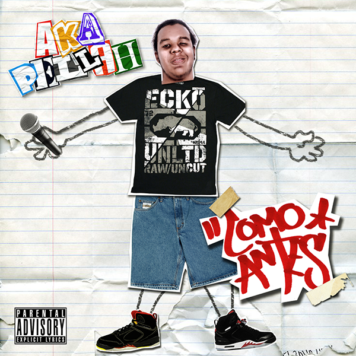
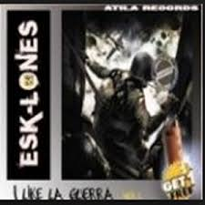
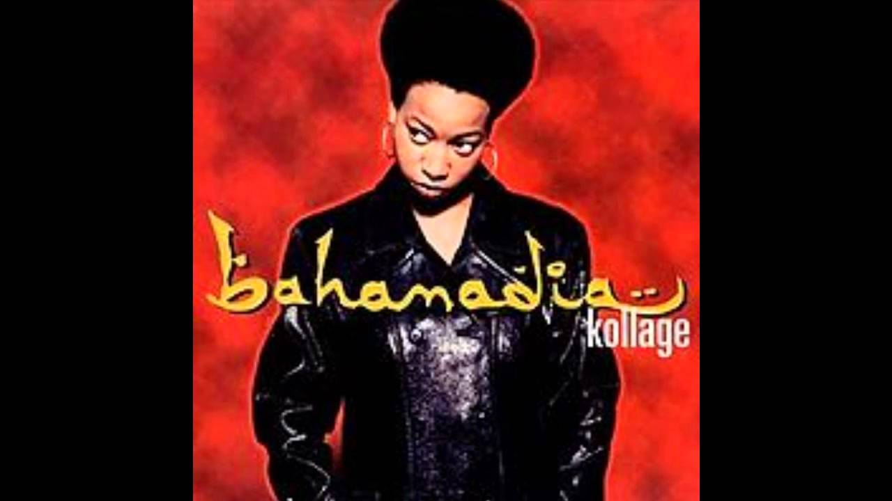
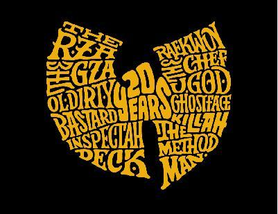
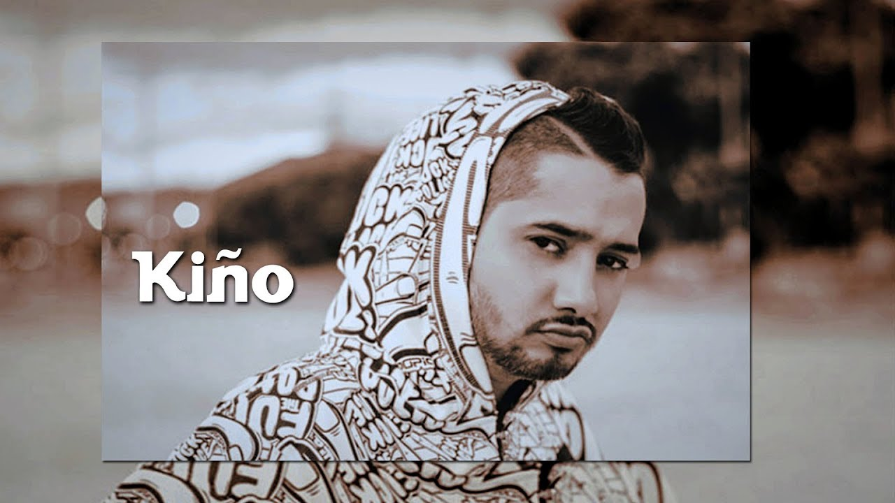
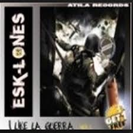
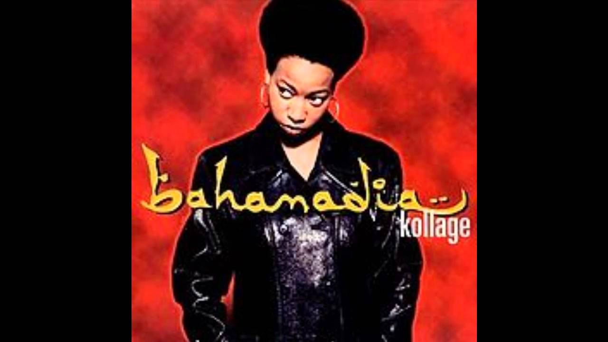
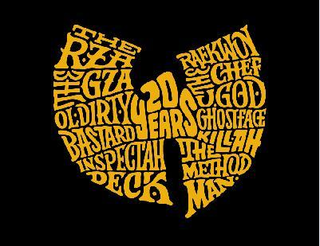
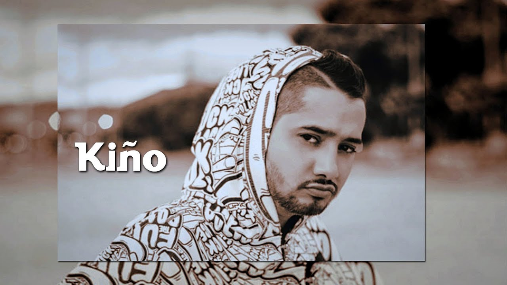

| INICIO | ARTISTAS | REGISTRATE |
BIENBENIDO A MI SITIO WEB URBANA
PRESENTACION
soy amante de la musica esta corre por mis venas y tengo un buen oido para la musica urbana comparto con ustedes lo poco de lo que escuchado a lo largo de mi vida mas adelante encontraras videos de algunos artistas que escucho referenciadosde youtube algunas sonidos como para reproducir mientras navegas y sea de tu agrado estar aqui
podras registrarte y poder contar con la oportunidad de mis recientes actualizacionesalgunos artistas



 



RAPORTES
hip hop al parque.
no te pierdas la presentacion de grupos locales e internacionales en el evento 2019 donde tendremos artistas como kino,canabrava y nach de espana
La leyenda del rap Wu Tang Clan se posiciona a favor del independentismo catalán.
El legendario grupo estadounidense WuTangClan ha sorprendido a sus seguidores con un mensaje en su perfil de Instagram, en el que evidencia un posicionamiento a favor
del independentismo catalán. El post, que muestra una imagen de los recientes disturbios en Barcelona (en la que uno de los manifestantes porta una sudadera del grupo), ha sido comentado por varios usuarios que han ido añadiendo hashtags como #freedomforcatalonia, #spainsitandtalk, #policebrutality o #spainisfasciststate.
derechos reservados D.O.C 2019- contacto : d.ortiz1066@pascualbravo.edu.co